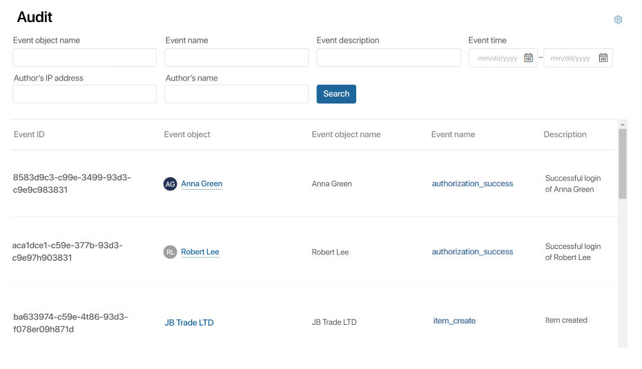

During the audit process, records of all events registered in the system will be displayed in the report.
Using the report, you can track events, view detailed information about them, and filter records by parameters. Events related to data retrieval, such as printing and displaying reports, will not be registered in the system.
начало внимание
Only users included in the Administrators group can work with the report.
конец внимание
Please note that the complete list of features is available starting from version 2023.5.
Set up the report
The report is placed on a separate page using the Security audit widget. To do this:
- Create a page in the main left menu or in any workspace.
- Add the Security audit widget to the page. Set its system settings if necessary.
The widget will display data in a table format immediately after placement. - To finish editing the page, click the button in the top right corner.
Working with the report
A finished report of registered events may look like this:

Above the table of events, you can see:
- Filters for a faster search with parameters. For example, you can find events created on certain days or belonging to a specific secret.
- Search in archive data. Select this option to search for events by specified parameters among archive data. If the option is unchecked, the events are searched only in the operational storage. The option appears if the system administrator has enabled event archiving and set the period of operational data storage in the Security Audit module settings.
The data about the registered events is stored in the external database specified upon installation, separately from the information that is processes by built-in apps or Store components. These data are saved as JSON and can be processed by external applications.
Set up report table
You can customize the appearance of the table: add or remove data columns, swap their positions, or set sorting by a specific parameter.
To do this, in the top right corner of the page, click the More button and select Table Settings from the list:
- Show Properties. Check the fields whose values will be displayed in the table by clicking on the plus icon. To remove a field from the display list, click on the minus icon. Drag and drop fields to change their display order.
- Sort. From the drop-down list, select the parameter by which the data in the table will be sorted. Then specify the type of sorting: ascending or descending.
Event export
You can export data stored in the security audit report. Data is saved in a file in .xlsx or .csv format with a limit of 1000 records.
To start exporting data, click the More button in the top right corner, and then click Export Data.
In the window that opens, specify:
- Format. You can save the data in .xlsx or .csv file format;
- Export by current filter. Select this option to export data that you have pre-selected using specific parameters through report filters. For example, information on events related to confidential information, or events filtered by creation time.
The file with the exported events will be saved in the Downloads folder on your computer's hard drive.
Found a typo? Select it and press Ctrl+Enter to send us feedback